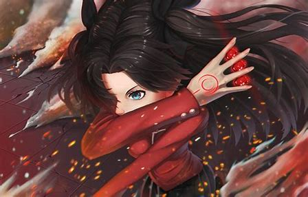

novembre 2022
Disambig gray RTL.svg لمعانٍ أخرى، طالع سالي (توضيح). سالي الأميرة سارة 小公女セーラ بورينسيسو سيرا سالي كرو سالي كرو نوع دراما، اجتماعي أنمي تلفزيوني كاتب فرانسيس هودسون برنيت مخرج فوميو كوروكاوا ستوديو نيبون أنيميشن العرض الأصلي 6 يناير 1985 – 29 ديسمبر 1985 عدد الحلقات 46 دبلجة عربية دبلجة شركة الشرق الأدنى بث عربي عدة محطات عربية تعديل مصدري - تعديل طالع توثيق القالب سالي ((باليابانية: 小公女(プリンセス)セーラ)؛ أي الأميرة سارة، (بالإنجليزية: Princess Sarah)) مسلسل رسوم متحركة ياباني (أنمي) ذو عمق إنساني. أنتجته استديوهات نيبون في عام 1985م، وسالي هو الاسم العربي للشخصية الرئيسية للمسلسل الكارتوني المُقتبس من الرواية الشهيرة للكاتبة فرانسيس هودسون برنيت تحت اسم «الأميرة الصغيرة» واسم الفتاة في الرواية هو سارة.
